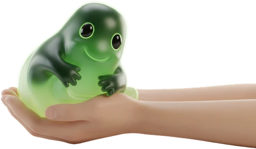
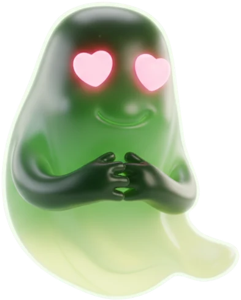
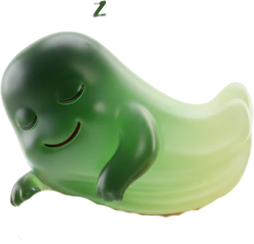
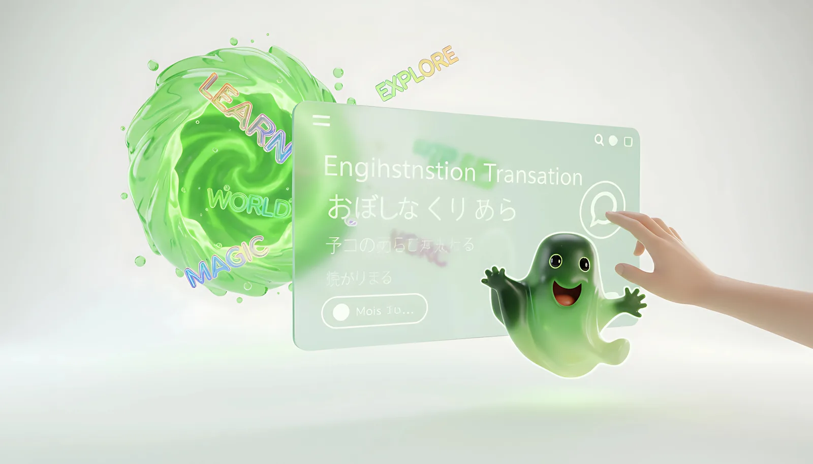
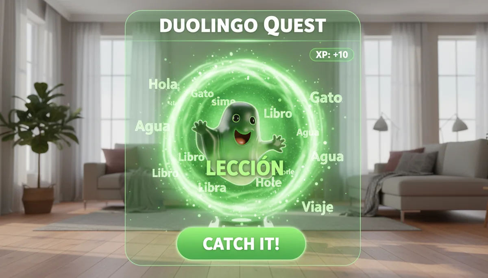
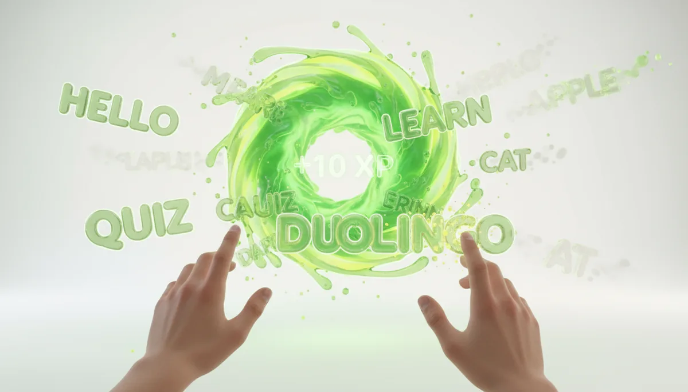
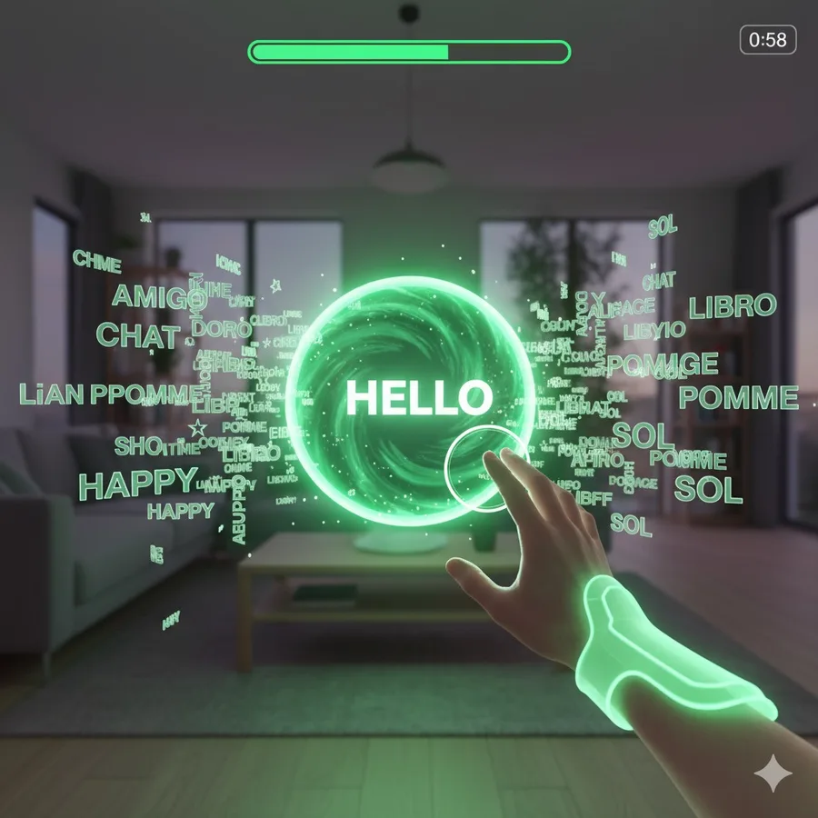
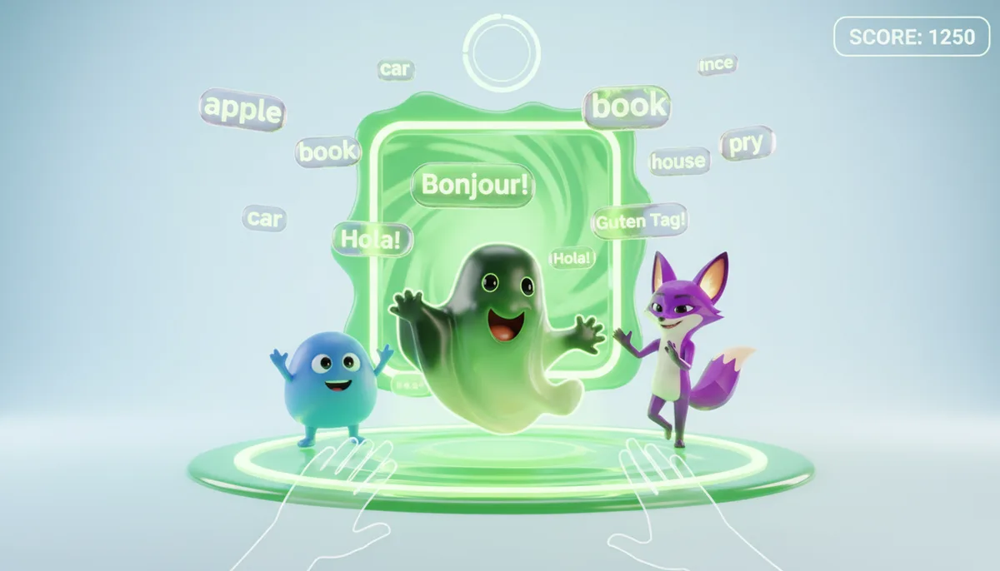
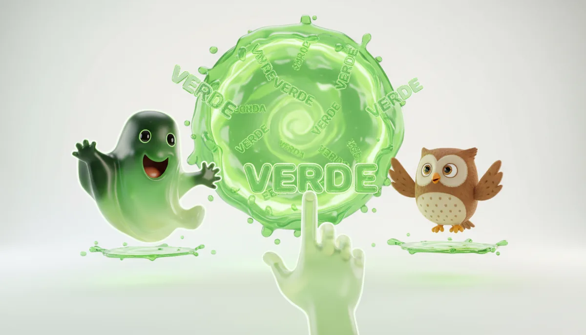
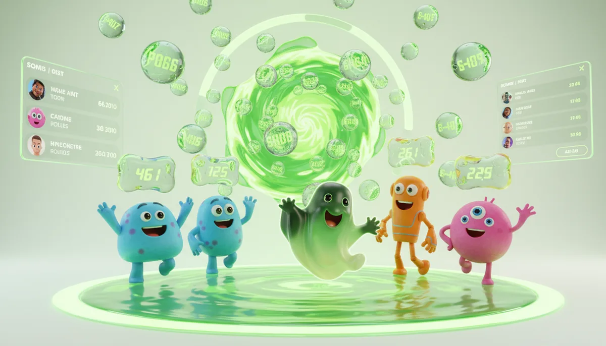

Case study · 2025
Boolingo
AR Language Learning Experience
THE MOST INTERACTIVE WAY TO LEARN NEW LANGUAGES
Reimagining language learning through immersive AR interactions.
An AR-based language learning concept designed under a 1-hour challenge.
- UX Design
- AR
- Spatial Interaction
- Rapid Design Challenge
1st Prize · App Reimagination Challenge
01 — Overview
Project at a glance
- Type
- Competition Project
- Duration
- 1 Hour
- Context
- App Reimagination using AR
- Role
- UX Designer · Concept Designer
- Team
- Collaborative — 5 designers
- Result
- 1st Prize · Winning Entry
02 — Challenge
The problem we set out to solve
Traditional language learning apps lack engagement. Lessons are passive, screen-bound, and disconnected from the world the learner actually lives in.
- Engagement collapses once gamification novelty fades.
- Vocabulary is taught as abstract pairs, not as lived context.
- Learners forget words because there is no environmental anchor.
60 minutes
From blank page to presented concept — total time on the clock.
Decide, don't deliberate
Quick thinking and confident decision-making mattered more than polish.
03 — Objective
What success looked like
- Reimagine language learning using AR.
- Make learning immersive, interactive and contextual.
- Improve engagement and long-term retention.
04 — Approach
Rapid thinking → idea → concept
The bottleneck wasn't ideas — it was commitment. Picking a single direction within the first 15 minutes is what made the rest of the hour usable.
05 — Concept
Boolingo, a place not a screen
Boolingo is an AR-based language learning system. Users interact with real-world objects, and learning happens in context — not in abstract flashcards on a phone screen.
The core loop
- Point camera at an object.
- Object is recognized in real time.
- Word appears anchored in space.
- Audio pronunciation + gesture interaction.
Point the lens at something on the desk, then select it to scan.
Nothing scanned yet
—
Scan an object to anchor its word.
0 of 6 words found
Illustrated scene, simulated recognition: this does not use your camera and nothing is detected from the real world. The six words and their pronunciation guides are illustrative demo content. The "Hear it" button uses your browser's built-in voice where available. The original concept's audio pronunciation and gesture interaction are described in the loop above, not built here.
From the concept presentation
The original visuals
These images and clips come from the Boolingo concept presentation.







06 — Features
What makes it work
Spatial learning through AR
Words anchor to real objects in the user's environment, transforming a room into a vocabulary map.
Context-based vocabulary
Learning happens through what the user is actually looking at — not abstract flashcards.
Interactive feedback
Pronunciation, gesture and visual cues respond in real time, building muscle memory.
Gamified engagement
Streaks, quests and friendly characters keep momentum without breaking immersion.
07 — Design thinking
Why these choices
Why AR?
Because language is contextual. Seeing the word 'cup' on the actual cup creates a mental anchor a flashcard never can.
Why spatial interaction?
Embodied memory outperforms passive reading. Reaching, turning and gesturing all reinforce recall.
Why simplicity?
We had 60 minutes. Ruthless reduction was the only way to deliver something coherent and demonstrable.
08 — Outcome
The result
More than a win, the brief proved a quieter point — that a strong point of view, made early, can carry a team further than any amount of polish made late.
09 — Team & achievement
The team behind it
Award-winning team at the App Reimagination using AR competition (1-hour challenge).
Collaborative ideation and rapid execution played a key role in developing the concept within a limited timeframe.
10 — Reflection
Looking back
- What worked
- A clear point of view emerged fast — anchoring language to physical context. The 1-hour limit forced ruthless prioritization and a single, defensible concept.
- What could improve
- Interaction details (onboarding, error states, accessibility for low-vision users) were left at concept level. The AR object-recognition flow needs real-world testing.
- With more time
- Run user testing with language learners, prototype the gesture vocabulary in Lens Studio, and explore technical feasibility for offline object recognition.